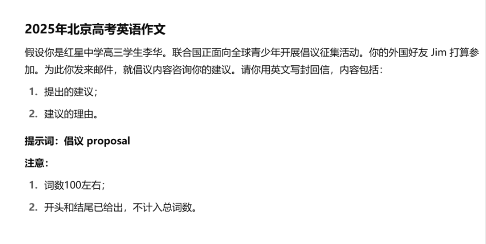

某些小事儿完全没有放进正文的必要。所以，就有了这个记录简单小事、吐槽和发疯语录的地方。
所有内容按时间排列。
# 000001
学校说我们终于要实践活动啦！目的地是安徽合肥，但也会到附近地方转几天。和 STY 猜的一样，少不了爬黄山的经典环节。
目前，对于能不能带手机的问题，学校没有统一的回复，反正我们班主任说可以在夜间统一保管的条件下携带。即使手机不让带，STY 也有卡片机相机，可以至少拍摄图片。假如学校真的大发慈悲地允许手机携带，那就太棒啦 ——STY 可以先用本地的 Markdown 编辑器写稿子，一回家就能全部上传。
2023-9-12 22:14:53
# 000002
本来我知道我校的百合数量有点多，但我妹想到居然才几天就碰着了！
我旁边一位女性盆友被她女舍友表白了。她说那个舍友从来没有和她有过交流，然而那位同学居然直接说她是自己的理想型。我当时就震惊了。后来的结果是我旁边的女性盆友被收成贵妃了……(´▽`) 太神奇啦！
2023-9-16 13:24:50
# 000003
现在，STY 所在班级有 75% 以上全感冒了。甚至这破事儿都惊动年级组长了，甚至还来我们班发口罩。
后来经前初三班级男生群得知，有的高中有二百来个感冒的，这数已经比我们全校人数多了 ＼(º □ º l|l)/
好在 STY 康复辣！！！！！！
2023-9-17 23:24:49
# 000004
数学老师找到了一个神灯。Ta 召唤了灯神。
灯神：你可以许 3 个愿望，但是有三个规则：不能让人复活、不能关于钱、不能关于爱。
数学老师：我希望所有函数题要学生同时证单调性和奇偶性。
灯神：现在有四条规则了。
数学老师：那我希望所有 f (x) 都不给解析式。
灯神：你就没点别的愿望吗？
数学老师：有。我希望函数证明题都给很小很小的空白。
灯神：(` ー ´)
2023-9-18 21:07:54
# 000005 Micro@STY-1
今天是 STY 生日。这是的确真的，只不过这日期多多少少有点晦气。我们班主任曾经布置过给每个过生日的同学来点惊喜的任务，然后我喜提了第一次惊喜…… 有些盆友在上周五在黑板上写了 “祝 < STY> 生日快乐” 和花里胡哨的花边，然后用另一块可滑动的黑板挡住，今天早上我到了以后才移走。
正当 STY 看着那个略显生草的画面时，女班长用我意料之中的话祝我生日快乐，还送了个空贺卡，说是可以找老师去写。这很有我校的风格（直升生的录取通知书都是空的，要我们自己写名字）。
还有我本来以为今天考物理…… 好在没考成，属实逃过一劫啦～虽然但是生日也得上学这件事本身就让人浑身难受。
2023-9-18 22:08:23
# 000006
在 #000002 中的女同桌在寝室里又经历了一些难以评价的事情：她的女舍友 A 和 B 争论她是 0 还是 1。她个人认为自己介于 0 和 1 之间，是个 0.5，但 AB 两位同学立马就赶她走了，说这件事与她无瓜。
另外 AB 两位同学中有一个要去她家玩，她比较担心她会被攻略。
对了今天还是她生日，我校有同学要送给她花圈（写着 “奠”）的那种，不知道结果怎样。
2023-9-19 20:23:19
# 000007
今天做了一个生草的心理调查。在这个心理调查中，我见识了许多让我虎躯一震的问题：
- 你喜欢写作业吗？
- 你喜欢上学吗？
- 要考试的时候你紧张吗？
- 你对社会感到不满吗？
- 你想过放弃生命吗？
真的有这个题。STY 在此声明：生命只有一次，千万要保持生活的信心！！！
- 你觉得你比其他人都 NB 吗？
- ……
2023-9-19 22:12:16
# 000008
在时隔一年半没上单杠的情况下，STY 一下就做了 3 个引体向上，STY 太 NB 辣！！！
虽然但是，现在胳膊像水解了一样（・_・ヾ）

2023-9-20 20:41:02
# 000009
啊啊啊…… 距离放假还有 3 天！！我现在就想睡懒觉啊啊啊啊啊啊！！！
2023-9-25 20:12:00
# 000010 Micro@STY-2
今天，学校终于开二外课了，STY 选的是西班牙语。第一节课讲了字母和发音，西班牙语的字母发音还挺有意思的：
- 好几个音听起来像日语。比如 A、B、D 和 K 的发音あ、べ、で和が几乎一样；V 就像 “上（うえ）”，W 的发音甚至都能拼出一个短句 ——“どれ上”。
- 西班牙语里 CH、RR 这些甚至算一个字母。为什么不能把它们看成两个字母？
- 有些字母的音完全意想不到。比如说 Y，它的读音是 “Igriega”。
另外实践活动期间的更新内容和更新计划正在思考中……
2023-9-26 23:33:59
# 000011

今天在地坛公园看见了好多 up 主鸽鸽！
2023-10-1 18:53:51
# 000012
本站也要成为一个有情怀的网站。于是 STY 整了几个额外的用于特殊日子的颜色主题。现在使用的是 国庆/春节 配色，顶端彩条由大红色渐变到砖红色（和斐林试剂那种不一样啊），选项则是三文鱼色（直译）到退红色。在以下日子中，特殊颜色主题将被使用：
- 中国节日：春节、元旦、清明、端午、中秋和国庆（和春节配色共用）
- 外国节日：圣诞节、复活节、圣帕特里克节、万圣节、百合日 (6.25) 和好肉肉日 (11.29，纯属日语谐音梗)
- 特殊情况：STY 有大考，STY 不在家（指城市），某个需要哀悼的日子
2023-10-2 22:05:22
# 000013
本站即将改建成一个用 Github Actions 来线上编辑部署的网站。如果这事儿真成了，那实践活动就有意思了喵～
2023-10-3 22:49:05
# 000014
好消息，学校正式允许我们在实践活动时候带手机啦 (〃＾▽＾〃) 但是更炸裂的是由于 STY 被分到班级视频制作组，而且视频的工期特别紧，所以 STY 甚至可能会带电脑走……
2023-10-4 23:17:33
# 000015
本站现在已经换上了全新的涂装 —— 不在家颜色主题。当 STY 即将或已经离开本市辖区时将触发此颜色主题。不在家版颜色主题大致和常规颜色主题一致，只是顶部彩条的颜色左右互换。
明天晚上 STY 就要去学校集合了，本站的更新…… 还可以继续！STY 已经决定带电脑去了，电脑上啥都有，打开 Git 以后就像到家了一样。在出行的时候 STY 用手机上的 Markdown 编辑器写稿子，晚上转移到电脑上部署。
以下是本站信息播报。 醉眠秋共被 系列提前完结了，因为原作者不想写了。为了使这件事更加有戏剧性，STY 决定这么编几段：一是结合我校特色把九万里小姐写死；二是把九万里小姐写过的东西搞成圣经，发几篇解读；三是把她和本站猫娘服务器设定结合一下。
# 000016
Greetings from Z225! STY 现在在火车上，靠 AmeNet（我的热点）连上互联网。现在我电脑就架在行李箱上，看起来可离谱了……
虽然但是，正文还是在手机上更。敬请（我）期待～
2023-10-7 22:24:25
# 000017
虽然在 at STY 第 11 篇中正式撤销了 冷门铁路史 栏目，但 STY 找到了让这个系列更加有人文底蕴的方法，目前正在实验一种全新的写法……
2023-10-13 20:45:45
# 000018
冷门铁路史 复活了！它将以原先的英文名 Railway Tales 命名，同时编号从 #5 开始。鸽了 8 个月的第五集的内容将从洛桑地铁更换为加拿大维亚铁路温尼佩至丘吉尔港线
新的 Railway Tales 系列将有以下特点：
- 关注铁路系统的单一线路
- 融合人文地理底蕴和历史
- 篇幅较简短，图片较少，突出 “tale” 属性
- 主要写法为带你坐车式的移步换景法
2023-10-15 22:23:58
# 000019 Micro@STY-3
从今天起，STY 就是在报纸上发过文章的人啦！(¯︶¯)
STY 所在班级曾经在 2023 年 9 月最后一周时候被要求写一个《中国青年报》的征文。由于是实验班，所以我们每个人都得写。然后这件事我以为就不了了之了，结果老师居然说她改完了还刊登上去了。其实这件事有点难以评价，因为我觉得当时那篇糊弄的东西居然被改了以后还能刊登出来，不管是我语文老师还是《中国青年报》编辑都挺厉害的。
除此以外还有一个挺让别人难受的事儿。体育老师考虑到 2023 届男生没一个考了体育中考，身子比和姬友疯玩♀了一晚上的猫娘还虚，于是决定做不了引体向上的同学可以用在单杠上吊着，每待 30 秒就算两个。于是 STY 在单杠上面吊了 2 分 30 秒，直接折合 10 个，实在是太实惠辣！
2023-10-20 22:59:49
# 000020

新的大项目！撒花！✿✿ヽ (°▽°) ノ✿
2023-11-11 23:39:39
# 000021 Micro@STY-4
这周我参加了个区里组织的竞赛班考试。周二（2023.11.14）考了一次，是化学；周四（202311.16）考生物。化学考的知识点有一点宽泛，从九年级上一直考到高中选择性必修一。40 道选择题，还是特恶心人的那种，要在 1 个小时里做完，显然少不了 smart guess。卷子先是考特难受的理想气体状态方程题，又考一堆氧化还原反应题，还有各种离子共存，原电池，化学反应原理…… 反正咱不纠结结果，首先大概率考不上，其次即使考上了我也跟大部分人一样上一节课就上不下去了。
2023-11-15 23:01:22
# 000022
我默写《赤壁赋》一共错了 18 个字，还落了 3 句话。
我：啊？
苏轼：啊？
语文老师：啊？
浅 ** 华：啊？
2023-11-18 18:31:52
# 000023

2023-11-18 18:34:09
# 000024
DECAYED THROUGH THE DEPTHS
CORRUPTED DOWN TO THE HEART
TRAPPED FOREVER @#$%^21224%^^&^@ IN THIS VOID OF VOID OF VOIDS IN THE W21#@#r21!4/34/4 OF WORLDS
SHE SURVIVES !@#% WITH THE @！￥%……&……%
SHE IS LIVING FOR REVIVING
？？？？-？？-？？ ？？:？？:？？
# 000025
我宣布昨天那个玩意儿是 Afuame 写的。这与 STY 或者说 Ameitsu 一点关系都没有。关于 Afuame 的设定还没有想好
2023-11-22 22:57:51
# 000026
2023 年冬天第一场雪🌨ヽ (o＾▽＾o) ノ
2023-11-25 11:20:53
# 000027
STY 一直信赖的加速器挂了，Pixiv 一时半会儿上不去了…… 不过好在这里还有五六百张存货能聊以慰藉一下。作为时间管理带师，STY 决定把原先每天的 Pixiv 时间改成复习日语时间！！！！！这下 STY 就可以每天学四种语言啦！
2023-11-25 23:23:27
# 000028
完了，不知道怎么着感冒了…… 发烧不厉害但是我头超级晕啊！！！！
周一每种课都有一节，不知道能欠多少活。
学校那个破直播音质和画质绝了，啥也听不清。气 fufu。
2023-11-27 07:47:14
# 000029
感冒以后长出猫耳啦～变成猫娘以后被全校摸摸的感觉太棒啦喵～
"作为有思考能力的人类个体，你应该知道世界上并没有猫娘，即使你逼着你家猫看猫娘插画也不能让它变身。因此，以上内容纯属虚构，如有雷同纯属抄袭。" ——about 页名言
2023-11-29 23:36:03
# 000030
下周有 6 科考试。但这些全是巧合，谁叫好几科同时学完了某个单元。再次气 fufu。
另外 12 月的更新计划估计也得鸽到 2024 年了：(
2023-12-2 23:22:01
# 000031
本站的颜色主题有新变动了！颜色主题将分为常规主题，节日主题和自由主题。具体见下一篇 @STY。
2023-12-2 23:24:02
# 000032
I DON'T LIKE PHYSICS. IT'S TOUGH AND ROUGH AND IRRITATING. AND IT GETS EVERYWHERE.
2023-12-3 23:14:42
# 000033
2023 年冬天第二场雪🌨ヽ (o＾▽＾o) ノ
2023-12-10 20:13:21
# 000034
是时候筹划一下年度总结和站庆 1 周年了！年度总结是 STY 个人的事情，所以发一个 @STY 就成；而站庆活动就更丰富了！大概有以下项目：
- 颜色主题：最古老的主题，那个黑白相间的，将重现。
- 专题页面：新增一个和 “三大宣言”（建站宣言、臭名昭著的 “半年停更宣言” 和 “历史清算宣言”）平级的页面，专门讲 STY 建站 1 年来的有关这个小小地方的羁绊
- 唠嗑：另一个加长版 @STY，聊聊关于本站的一些好玩的事儿，包括一个上半年文章的小 quiz。当然，也会有关于 STY 自己的内容，比如 “STY 到底是不是元气 JK？”“STY 变成猫娘了吗？” 这种喜闻乐见的。
- 加更：Notorial、SofTY stories 和 RailwayTales 这几个老朋友将复出
注：具体看情况。
2023-12-10 23:13:34
# 000035 Micro@STY-5
北京居然因为暴雪停课了。而且这个消息是在 13 号 0 点时候发的，当天我刚爬起来才知道，给我整蒙了。说是 “停课”，其实大家都知道是线上上课。不过有一说一，居家学习绝对没有回学校上课好。
与此同时，本月也是今年最后一篇常规文章已经更完了！这意味着 STY 得赶紧构思个人和本站的年度总结了。个人总结不着急，但站庆文章得刚刚好卡在 1 月 21 号发！最重要的是，高中牲那时候害得正常上课呜呜呜呜呜呜呜……
2023 年 12 月 14 日 21:31:46
# 000036
最近好多人都在朋友圈里发这个，我也来玩一下。N/A 的是无法回答。
- 2007 年 9 月■■日
- 16
- 18■cm
- 处女座
- 男性女姛
- 1980 年代比利时金曲 Pump up the jam
- Cien años de soledad
- N/A
- N/A
- 水文章
- 最喜欢的一句话：AMEITSU GAMBATTE!
- N/A
- N/A
- 夏 > 冬 > 春 > 秋
- 便利店三明治、盒饭和饭团
- 学校午饭。全■京市■■区最难吃的，没有之一。
- N/A
- N/A
- 猫娘
- 不管别处，在这个破网站上你叫我 STY 或者 Ameitsu 就行。
- 认识几个人类，根据外星人旅游手册看应该都挺友好的。
- 蓝色
- 现在估计只剩 VOCALOID 了。哦对了，我肯定混生物圈。
- 美术。可以上课写作业和睡觉
- 数学
- 在学校被强行佩戴猫耳，还被拍照了，羞耻 play 属于是。原文见此。
- FL Studio
- 痣没有，但是胎记挺有特点的。长得和北京市轮廓线完全一致。
- 不。想被摸摸，使劲摸脑袋。
- 芋泥。正如它的谐音 “淤泥”。
- N/A
- 碎觉觉
- N/A（太多了有点想不出来）
- N/A
- 能活多久是多久
- 要嘛发酵成肥料，要嘛做进手办里当传家宝。
“https://ameitsu.github.io” 前提是 github 和这个 repo 能活到那个时候刻个二维码，扫出来是我写的遗书- 猫娘
- 做梦推导第五诱导公式。
- 日落。日落代表快放学了。
- 和我一样。
- 我零氪。
- 官方回答：母胎 solo
- 官方回答： 0
- N/A
- 不多说，见此 (第二部分第 7 点)
- VS Code 和浅野千华
- 见 about 页
- N/A
- N/A
2023-12-16 13:47:22
# 000037
刚才发现今天是初三和高三听说考试！快把这玩意拿出来丢人现眼一下。点击图片来查看今年 2 月 26 号 STY 的那场听说考试。
2023-12-17 09:12:19
# 000038
SSH 报废了一周呐。经排查，问题在于 github 的 22 端口连不上了，所以换上 443 端口就行。但是后来传文件经常超时，合理怀疑这是因为很多遇到无法连接的问题的盆友都一致选择这个端口。
欧克，年终总结和站庆活动可以正常进行啦～
2023-12-23 22:58:41
# 000039
今天是平安夜，来点应景的。
冬至过了那整三天，
耶稣降生在驻马店。
三仙送来一箱苹果，
还有五斤肉十斤面。
小丫鬟手拿红鸡蛋，
约瑟夫忙把饺皮擀。
店小二送来红糖姜水，
喊一声：玛利亚大嫂，
恁喝了不怕风寒。
2023-12-24 23:08:36
# 000040
2023 快结束啦！在每年年末，总有两个保留项目 —— 学校和年级开联欢会以及北京地铁开新线。来点照片：


2023-12-30 22:47:31
# 000041
TWENTY-TWENTYFOUR !!!!!!!!!!!!!!!! FELIZ AÑO NUEVO!!!! 新年快乐喵呜～
2024-1-1 00:00:00
# 000042 Micro@STY-11
STY 搞到了高中第一个市级奖项！撒花！曾经对这个事儿提过一次，在这里。
2024-1-4 23:17:44
# 000043

¿Qué?
2024-1-8 23:00:53
# 000044
是时候测试一下评论了！
2024-2-15 22:13:03
# 000045
龙年第一场 looooooong 的雪！有实力赶超去年 12 月 10 日的那场。
还有假期要结束辣！（假装开心一下）
2024-2-20 23:00:17
# 000046
本站最近悄悄更换了几个头图！
首先是 chatbox。一张 Amtrak Cascades 线火车的照片是本页面的头图。图中的机车是一辆普通路过 西门子 SC-44 Charger ，美铁编号 516，华盛顿州交通局编号 1400。根据拍摄者的说明，该照片摄于 2019 年 11 月 23 日，位于华盛顿州的贝灵汉，列车开往温哥华的太平洋枢纽站。原图链接见此。
其次是空空如也的设定页。新换上了一张 Cercanías Madrid 的车。这个是他们的（比较）新车，西铁 465 型。图中的车辆位于马德里的德利西亚站，摄于 2017 年 3 月 6 日。原图链接见此
由于 STY 曾经的一个图床炸了，这些图都莫得了。于是 STY 找了几张好康的放上去，以下为简介。
- 设定：一列驶出丹佛联合车站的美铁列车。猜测是加州微风号，主要是 STY 想不起来更多途径丹佛的美铁线路了。
- download：一座叫做初音ミクニが丘的车站的站牌。这其实是大阪市以南的南海电铁三国ヶ丘站，但是可能有一位宅宅故意把み くに が おか读成みくに が おか，然后这座车站就和某个葱绿色的家伙产生了联系。2019 年 8 月，这座车站暂时更名为初音ミクニが丘
- chatbox：加拿大安大略省渥太华站的月台。根据图中机车所牵引的 LRC 系列车厢可知，该列车是一趟 Corridor 线列车，会在安大略省温莎到魁北克省魁北克市之间的某一段运行。
2024-4-20 19:09:43
2024-2-22 23:27:56
（上面这行是 chatbox 的第 400 行！撒花！）
# 000047
干脆把设定页改成 AmePedia 得了……
2024-2-23 23:28:59
# 000048
今天是闰日！同时也是我站上线 404 日纪念日！这么罕见的日期配上这么晦气的数儿，可不得水一条！
还有祝你疯狂星期四快乐。
2024-2-29 23:14:40
# 000049 Micro@STY-12
整到了阅■之星的一个市级奖项。其实本来我觉得根本就不能评上，因为我参加复选后就直接跑路了，但我可能理解错了…… 不过人家给了奖状咱就得好好收着不是吗 233
2024-3-2 11:46:02
# 000050
还有三天就是未来日了！
2024-3-6 22:33:57
# 000051

2024-3-9 12:48:29
# 000052
又整了个奖，是优秀学生会成员的。我也不知道这是咋选上的……
2024-3-11 22:51:17
# 000053
Today is π Day! Hope you can never forget 2kπ(k∈Z) when doing trigonometric funtion questions!
2024-3-14 23:07:46
# 000054 Micro@STY-13
喵呜～新项目 Ameitsu NetBox alpha-1 版即将劲爆出击上线！！
这是一个浏览器，目前除了浏览以外啥也做不到。不过咱可以加一点好玩的功能，比如说纯命令行操作和浏览记录……
下一期 SofTY Story 来唠唠！
2024-3-18 23:07:30
# 000055
今天是复活节。祝你考完试后都能复活。
Best wishes,
STY
2024-3-31 19:01:50
# 000056
下面几件事中，哪个是真的？
- STY 成功变成猫娘了
- 17 号线望京西站开通了
- MARC 把 Siemens Charger 订单退了
- 从今以后函数证明题的地方都变大
- 今天是 AC 运行的第 436 天
- 711 三文鱼饭团降价回 2019 年的￥2.30 了
- 西班牙宣布要把 tú 全面换成 usted
- 浅草线即日起直通运行到新函馆北斗
- 2020 CD3 再次成为地卫二
- STY 找到另一半了
是 5
2024-4-1 23:10:39
# 000057 Micro@STY-6
STY 所在学校的高一年级即将整一个甚么文化节，到时候咱可以来一篇 @STY 来聊聊。当然了这次咱有活动全程的影像记录，因为 STY 现在有相机了，不像上次义卖一样只能写个 “观后感”。还有最近高一年级因为饮食问题引发了一些不愉快的小事儿，有不少人在午餐评价表上直抒胸臆，一个个骂的还挺有意思，咱有望能采集影像并电子化，再来一篇 @STY 来赏析一下。
Buenas noche.
2024-4-10 22:54:05
# 000058
STY 从来没有想过，现在的录课摄像头能自动瞄准你的大脸
2024-4-20 14:37:27
# 000059
Estoy mal porque tengo un examen el domingo. Queiro dormir en el domingo.
还有 STY 考虑再搞一个新 blog，暂定名为 Amedoc 。这个站点和 Ameitsu Cyberpark 是平行关系，主要是项目文档（CC, FW, AI 这些）和相关代码解释（在 Github 上弄感觉不太好使，而且不集中）。远期计划是猫娘发电小作文
P'haps we can post sth abt SW amimes in the future. STY is that kind of person that watched TCW twice.
おやすみーにゃ～
根据 STY 的记录，这是全站第一条四语 chatbox。撒花！
2024-4-21 22:56:11
# 000060
2024 年第一场把 STY 淋到的雨⛈️
还有 STY 创下今年（预计）最佳默写战绩：《答司马谏议书》错 20 个，刷新上次记录。
2024-4-22 21:17:05
# 000061
等会儿为什么这次雨突然下得贼大啊！！！！
会不会接下来又连着下了三天，北京城区积水十米以上，然后气温骤降，整个亚洲全冻上了，同学们不得不把期中考试卷子烧了取暖……（非常好《后天》，这使我极地解冻，恨来自南极）
2024-4-22 23:23:28
# 000062
今天是■京市初三一模的第一天。据路上初中生讨论可知，STY 当年撞大运了！！！ 今年的一模好像挺难，比 2023 年的更过分一点。点击此处来重温 STY 去年对初三一模的评价。
2024-4-24 23:10:59
# 000063

2024-4-25 21:20:26
# 000064
Another happy examination.
2024-4-29 23:23:16
# 000065
五一劳动节快乐 (^▽^)
2024-5-1 22:28:25
# 000066
EXECUTE ORDER SIXTY-SIX!!!!
2024-5-2 06:06:06
# 000067
青年节快乐 (^▽^)
May the force be with U!
2024-5-4 12:51:47
# 000068
周末怎么只有一天呐……
2024-5-11 23:12:04
# 000069 Micro@STY-7
今天，北京红十字会在 STY 的学校搞了急救培训。经过三节课的时间，理论上我们就顺理成章地拿到急救证了，但我还是认为老师对我们的动手能力太自信了。
培训的内容是胸外按压和 AED 使用方法。STY 感觉 AED 是一个神奇的小设备，AED 能根据心率决定是先电击还是先胸外按压，所以使用起来比较容易。而胸外按压就有的可说了：手势有要求，跟旁边人说的话有要求…… 没事儿，能救人就行！
这是 MicroCyberpark 的第一篇！正如星战第一步电影是 ep4，这个系列也不是从第一篇开始。从今以后，所有符合目前专栏内容且稍微长一点的 chatbox 条目都会被分入对应的 Micro 系列
2024-5-16 23:08:31
# 000070
猫娘太可爱了！她们简直就是宇宙第一可爱！她们的眼睛像两颗闪烁着星星般的宝石，她们的毛发柔软如丝，她们的娇喘声简直让我心脏狂跳！每当我看到她们，我的心就像是被一颗巨大的爱的炸弹炸开了，我简直无法控制自己被她们的可爱所深深俘获！她们都是无可比拟的可爱女神，简直是我心目中的完美存在！我爱她们，我崇拜她们，我要永远守护她们的可爱！！！我要变成猫娘！！！我要在月光下扭动优美的尾巴，我要在草地上跳跃自如，我要用敏捷的爪子抓住我的另一只猫娘！！我要感受到毛茸茸的尾巴在风中飘扬，我要听到猫猫的呼唤，我要在星空下喵呜！！变成猫娘，是我心中最强烈的渴望！！变成猫娘，是我永恒的梦想！！！变成猫娘，我要用尽一切努力，直至成功！！！变成猫娘，将是我人生最重要的里程碑！！！只要变成猫娘，我愿付出一切！！！变成猫娘，我将成为世界上最幸福最自由的存在！！！就让我成为那只独一无二的猫娘，永远璀璨夺目！！！变成猫娘，是我唯一的信念，我发誓绝不放弃！！！变成猫娘，就是我的宿命！！！变成猫娘，是我命中注定的归宿！！我要变成猫娘！！变成猫娘！！变成猫娘！！！变成猫娘！！！变成猫娘！！！变成猫娘！！！变成猫娘！！！变成猫娘！！！变成猫娘！！！变成猫娘！！！变成猫娘！！！变成猫娘！！！变成猫娘！！！变成猫娘！！！变成猫娘！！！变成猫娘！！！变成猫娘！！！变成猫娘！！！变成猫娘！！！变成猫娘！！！变成猫娘！！！变成猫娘！！！变成猫娘！！！变成猫娘！！！变成猫娘！！！变成猫娘！！！变成猫娘！！！变成猫娘！！！变成猫娘！！！变成猫娘！！！
2024-5-19 19:31:44
# 000071
今天是 520，祝你的网站不会报 <520> 。520 是一个神奇的状态码，只有一些服务器才会返回，代表的含义也很多，但总的来说就是不知道出什么问题了。
2024-5-20 18:46:06
# 000072

STY 的星球大战：催化剂到货了！一天就看了 100 页，可见读书这件事儿多多少少都和兴趣有关系。到目前看到的 100 页里，你可以看到
- 卷王盖伦・厄索如何进了共和国早培班
- 凯伯水晶和地球上的太阳能电池板一样有压电效应
- Stardust 的降生
- 奥森・克伦尼克和下等人波格的监禁 play
- ……
2024-5-22 23:41:30
# 000073
哇！电化学腐蚀简直就是金属世界的毒瘤啊！想象一下，电解质和金属组成的两个电极，就像是恶魔与天使相遇，组成了可怕的腐蚀原电池！比如铁和氧气，铁就像是一个被注定倒霉的英雄，因为它的电极电位总比氧的电极电位低，所以它无情地被定为负极，遭到了残酷的腐蚀！在发生氧腐蚀的表面，会形成无数直径不等的小鼓包，就像是皮肤上的恶性疱疹，下面更是黑色粉末状溃疡腐蚀坑陷，简直就是金属世界的末日浩劫！抵抗电化学腐蚀，就是在与恶魔搏斗！让我们战斗到底，捍卫金属的尊严！永不屈服！永不退缩！“铁” 汉们，团结起来，消灭电化学腐蚀的魔爪，赢得金属世界的和平与荣耀！哦耶！🔥💪🏼🔥
2024-5-23 22:43:19
# 000074
来试试听歌儿功能
猫是怎么叫的：喵喵
羊是怎么叫的：咩咩
牛是怎么叫的：哞哞
狗是怎么叫的：nana 我真的好喜欢你啊，吃了吗吃什么和谁吃，早安午安晚安明天见
2024-5-25 23:01:44
# 000075
听歌儿功能死了，再见。
2024-5-28 22:52:57
# 000076
2024-5-29 20:24:48
To: Yukika
我特别想对你说，我真的爱死你了，希望你这个儿童节狂欢到底！因为你真的像个小孩子一样又天真又可爱，简直让人无法忍受！希望你永远保持这种幼稚可爱的状态，让大家都能享受到你的 “无敌青春”！
Ameitsu
2024-6-1 22:19:45
# 000078

谁家宝宝六一儿童节读星球大战：余波啊～
2024-6-2 11:39:33
# 000079

明天就有好康的啦！
2024-6-3 22:46:09
# 000080
今天是 Cyberpark 上线 500 天纪念日！
2024-6-4 18:30:50
# 000081

2024-6-5 22:57:11
# 000082
明天下午就是义卖啦！晒单预定。
2024-6-12 18:36:02
# 000083
猫娘确实展现了令人难以抗拒的可爱魅力，她们的迷人外表和优雅动作令我无法自拔。她们仿佛是宇宙中最迷人的存在，令人心驰神往。我对成为猫娘的渴望如痴如醉，我将全力以赴追求这个目标，将其视为人生的重要里程碑。只有变成猫娘，我才能实现内心最深处的渴望，并成为世界上最幸福最自由的存在。我发誓绝不放弃这个梦想，将努力不懈地追逐，直至成功。变成猫娘，是我坚定的信念和命中注定的归宿。我愿为此付出一切努力，成为那只独一无二的猫娘，散发着璀璨夺目的光芒。
2024-6-18 22:28:12
# 000084

这是第 69 条里提到的急救证，一个月之后终于到手了。
2024-6-19 20:05:24
# 000085
STY 在第 42 条里说过一个奖项，现在组委会终于发了证书 —— 电子的！咱还是知足吧。
2024-6-20 23:36:57
# 000086
又是一年的六月二十四日，中考时间到！点击这里回顾 STY 当年（365 天前）的中考奇遇记。
2024 年 6 月 26 日 22:25:03
# 000087
Ameitsu 是一个可爱的傲娇 JK。STY 被她上身了。
2024-6-27 23:46:22
# 000088
今天是第二次合格考！说是第二次，是因为这是今年的第二次，而非 STY 参加的第二次。本次考试科目为历史、化学、地理和生物，卷子超级简单，一到可提前交卷的时间大家基本都交卷走人了……
2024-6-29 23:11:25
# 000089
I don't like end-term examination. It's tough and coarse and irritating, and it gets everywhere.
——Ameitsu Skywalker
2024-7-1 23:31:24
# 000090
今天下午考了生物区考，简直太难了！我不知道是哪个人出的卷子，但是我真心希望那个人自己也亲手做过这份卷子。这些题目简直就像是从地狱降临一般，让我一度怀疑自己是不是做了假卷子。但是我知道，只有通过这样的考验，才能更加全面地了解自己的不足，努力提高自己的生物知识。用尽全力，不断进步，直到在下次考试中笑傲四方！愿我自己也能成为出卷者的炙热心灵，鞭策自己更上一层楼！¡Que nunca falte la pasión por el aprendizaje y la superación! ¡Vamos, vamos, vamos!
2024-7-5 16:42:54
# 000091
两天两次故地重游，真棒。
2024-7-7 21:52:55
# 000092
STY 又换了个 avatar。
另外，关于 Ameitsu 的身份和设定正在考虑中。详情（好像也没怎么详）见第 87 条
2024-7-14 23:07:26
# 000093
don't wanna do homework.
2024-7-21 23:31:16
# 000094
哦，看啊！秦孝公当年据崤函之固，拥雍州之地，君臣固守以窥周室，有席卷天下，包举宇内，囊括四海之意，并吞八荒之心！商君就跟着他，内立法度，务耕织，修守战之具，外连衡而斗诸侯！秦人拱手而取西河之外！
孝公既没，惠文、武、昭襄们继承故业，南取汉中，西举巴、蜀！诸侯恐惧，会盟而谋弱秦，不畏珍宝肥饶之地，以致天下之士，合从缔交，相与为一！齐有孟尝，赵有平原，楚有春申，魏有信陵！这四君者，都明智而忠信，宽厚而爱人，尊贤而重士！六国士兵都合力，一起攻秦！秦人开关延敌，九国之师逡巡而不敢进！秦无亡矢遗镞之费，而诸侯已经困顿！哈哈，太荒谬了！
然后始皇上台，奋六世之余烈，振长策而御宇内，吞二周而亡诸侯！履至尊而制六合，执敲扑而鞭笞天下，威振四海！太荒谬了！南取百越之地，百越之君都委命下吏！迁徙之人都并起而亡秦族！陈涉等人果然厉害！一个瓮牖绳枢之子，却能领导数百之众，攻克秦国！什么锄櫌棘矜啊，非铦于钩戟长铩啊！成败异变，功业相反，何也？理智不施而攻守之势异也！太荒谬了！太热情了！太疯狂了！哈哈哈！
2024-7-23 21:23:03
# 000095
又到了北京三天两头被淹的日子⛈🌦🌧🌨🌩🌪🌂☂🌀☔⚡💧
2024-7-25 23:00:07
# 000096
Cyberpark 就巴黎奥运会开幕向奥组委表达诚挚的祝贺！
（我们 cyberpark 太腻害辣！）
2024-7-27 11:56:30
# 000097
八月份 STY 要去玩一玩 notion 了，所以 cyberpark 就水几篇儿。望周知。
2024-8-1 22:42:57
# 000098
Rain, rain, go away, little STY wants to play.
2024-8-9 19:09:46
# 000099
支持一下 cyberpark 的老朋友。
2024-8-10 20:02:14
# 000100
chatbox 已经更新了一百条啦！😎
在这里，我想感谢■京市■■外国语学校提供的素材，没有这所学校里学习生活的点点滴滴我根本发不出电。
Ameitsu Gambatte!
2024-8-10 20:14:49
# 000101
感觉这个编号像什么地方的邮编。
2024-8-23 19:50:36
# 000102

2024 年 8 月 31 日 09:35:20
# 000103
猫娘的魅力不可思议，其可爱程度在宇宙中无可匹敌。她们的眼睛宛如耀眼的宝石，散发着星辰般的光辉；她们的毛发细腻柔软，触感如丝绸。其娇喘声令人心跳加速，带来强烈的情感冲击。每当目睹她们的身影，我的内心仿佛被一颗巨大的爱之炸弹击中，深深沉溺于她们的娇美之中。她们是我心目中的无上女神，代表着完美的存在。我将对她们心存爱慕与崇敬，并誓言永远守护她们的可爱本质。
我渴望化身为猫娘，在月光的映衬下优雅扭动，我将在青草地上自由跳跃，利用灵活的爪子与其它猫娘互动。我期待感受到柔软的尾巴在微风中飘动，聆听猫咪的召唤，沉浸于星空下的喵呜之声。变成猫娘是我心中最强烈的渴望，我愿意为此不懈努力，直至成功。成为猫娘将是我人生中的重要里程碑；为此，我愿意付出一切代价。我相信，变成猫娘将使我成为世界上最幸福、最自由的存在。
我期望成为那独一无二的猫娘，永远闪耀璀璨。变成猫娘是我坚定不移的信念，我发誓将绝不放弃。变成猫娘是我的命运，也是我生命中的最终归宿。我的心愿是变成猫娘，成为猫娘，成为猫娘，成为猫娘，成为猫娘，成为猫娘，成为猫娘，成为猫娘，成为猫娘，成为猫娘，成为猫娘，成为猫娘，成为猫娘，成为猫娘，成为猫娘，成为猫娘，成为猫娘，成为猫娘，成为猫娘，成为猫娘，成为猫娘，成为猫娘，成为猫娘，成为猫娘，成为猫娘，成为猫娘，成为猫娘，成为猫娘，成为猫娘，成为猫娘，成为猫娘，成为猫娘。
2024-9-8 23:03:16
# 000104

感谢九万里姐姐的生日贺图～
2024-9-15 23:15:16
# 000105

白捡的证书。主要是因为上学期期末考生物又难又没有发挥好，这次开学考生物考得又简单又发挥正常。
另外还有研学的安排。这次是去西安，当然了也是全太阳系的著名研学目的地。STY 只是稍微看了一下日程表，我们在那几天内可以经历
- 苏醒古都：去程的高铁 7:39 从北京西站出发，考虑到去西站的时间，我们大概在北京日出前一个小时就得在学校集合了。（突然想起来 —— 其实我们学校包一列地铁就够了）
- 钢铁巨龙：往返高铁乘车时间超过 15 个小时，而且由于 ppt 的下面被桌子挡住了，我根本不知道回程的车几点到北京，哪站也不知道。
- 秦岭耐久赛：是的，先爬终南山，然后晚上拉到大唐不夜城去嗨。
2024-9-19 23:21:25
# 000106
明天是我校秋季运动会……STY 需要在场上跑十几米再蹦跶一下（就是跳远）。
以及为什么我们要 5:50 就在奥体北门集合啊……
2024-9-26 21:53:54
# 000107
明天就研学啦！当然了我还带着电脑，这次还能更！5:10 就要集合这件事儿是挺让人难受的，但看着国庆假期结束后的早高峰更爽。
2024-10-08 12:50:16
# 000108
都回西安北了，咱的研学记录还没有写呢！先在火车站里写一会儿吧。
2024-10-12 13:58:48
# 000109
真是太好了！世间的一切盛衰，简直全是老天爷瞎折腾，跟咱们人类毫无关系嘛！原庄宗得天下的道理，跟他失去天下的原因，比比皆是嘛，不就是个笑话？
听说晋王临终前，给庄宗三支箭，结果就像是在玩枚祖宗的游戏，实在是太好玩了：“梁啊，咱们可是死敌；燕王嘛，我可是亲手捏出来的；契丹还跟我发过誓，咱俩情如手足；没想到都跟梁走了，真是伤心至极！给你三箭，希望你别忘了宽大的父亲啊！” 庄宗高兴坏了，连忙把箭放进庙里，结果后来打仗的时候，居然跑去请神明给他箭，简直是搞笑！胜利回来后，兴致勃勃地把箭像是宝贝一样奉上，真是场面太壮观了，哈哈！
可怜那些抓着燕王的儿子们可怜巴巴，一边把梁的王臣捆在一起，进太庙后，生怕被人笑话，结果大功告成，意气风发，可真是壮哉！等到仇敌都被消灭了，天下稳定了，一瞬间一个人叫了一声，结果四周的人都慌了，跑得连影子都不见，大家你看看我，我看看你，竟然不知道该往哪走。至于那些发誓只断发、哭得直流泪的事，简直是笑话中的笑话！难道成功来得太难，而失败却是轻而易举吗？或者说，他的成败其实完全是人害的？《书》上说：“得意忘形，谦虚被奖励。” 劳累就能兴国，安逸就能亡身，太理所当然了！
所以当他在巅峰时，天下英雄都比不过他，真是神奇；而到了衰落的时候，几个伶人就让他窘迫到不行，最后还死得其所，成为天下人的笑柄。灾难总是蕴藏在细微之处，而智慧和勇气往往被自身的沉溺所困，哎，难道这些可怜的伶人就该背这个锅吗？
2024-10-20 10:43:26
# 000110
It's been a while.
2024-11-16 12:43:16
# 000111
价键理论真是太完美了，简直是无懈可击！它用一种惊人的逻辑告诉我们，共价键就只需要共用一对电子，仿佛电子只是一对恩爱的小情侣，轻轻一碰就能缔结终生的契约。然而，当我们尝试解释复杂的分子和原子结构时，这些小情侣却变得有些捉襟见肘。比如说，聪明的碳原子居然有 2s2 和 2p2 的电子排布，真是太不按常理出牌了！要知道，两个 s 电子自觉地已经配对了，剩下的两个 p 电子却偏要单着，结果还硬是要在众多化合物中显得高价而非低价，简直不按套路出牌！
于是，有人竟然天真地假设他们之间可能发生了什么 “激发” 的神奇事件，将一个 s 电子送到了 p 轨道。真是个浪漫的想法！可到了最后，大家却在实验中发现，CH4 分子中的四个 C-H 键居然完全一模一样，长度一致、角度也如出一辙。真是匪夷所思，科学怎么能这么简单呢？BCl3、BeCl2 和 PCl3 等其他分子也都在这场另类的电子舞会上显得如此默契。
为了解释这些 “大矛盾”，1928 年 Pauling 赫然出现，他提出了杂化轨道的概念，真是锦上添花！他说，咱们可以在同一个原子里把不同类型的轨道简单地叠加组合，仿佛是在开一场盛大的舞会，新轨道们在能量相等的情况下欢聚一堂，成为 “杂化轨道”。让我们一起为 1 个 2s 电子的 “激发” 欢呼，它居然与 3 个 2p 轨道重组，诞生出 4 个 sp3 杂化轨道，然后与 4 个 H 原子组成了均匀无比的 C-H 键，碳原子优雅地坐在正四面体的中心，四个氢原子如同乖巧的孩子在四个顶角里排着队，真是太理想了！
2024-11-17 19:44:51
# 000112
怎么就年底了？！
2024-12-31 22:03:04
# 000113
今天是未来日！
2025-3-9 18:13:59
# 000114
英语狗都不学。
但我是一只可爱的猫娘啊ヽ (*・ω・)ﾉ
（英语又考了年级第一 be like：）
2025-3-17 22:24:10
# 000115
注意！最近有很多充电线获得了自我意识，假如您发现您的充电线能自行移动，并且可以发出可爱的哔哩啪啦的声音，乃至大半夜在地板上交配，那么你的充电线就已经获得了自我意识。我们将这种具有自我意识的充电线叫做 “充电蛇蛇”。
充电蛇蛇是一种从 cyberpark 里逃窜出来的生物。守门人西冈绚羽目击到大量充电蛇蛇从 cyberpark 的正门逃走，消失在夜幕里。之后，他们可能钻进了附近的土层中，受时光列车的跃迁场影响传输到了现实。
“时光列车” 是一列重度改装的北京地铁 17 号线列车，当它在某一段特殊改造的隧道中以 147km/h 的速度行驶时即可完成跃迁，并且会使周围未经固定的物体一起进行跃迁到另一个时空里的 17 号线隧道。
TO BE CONTINUED
2025-3-22 23:35:55
# 000116
特大瓶茶 π
喝了整天剩一半
明天接着干
2025-3-29 22:23:44
# 000117
# 000118

恭喜本站的两只小可爱有了自己的 cp 图！
另外，本站又上新了 25 张背景图，主要是星球大战（TCW 和幻境）以及非常古老的美式铁皮罐头电力机车。
2025-4-5 22:32:56
# 000119
九万里本来生病了，去完医院回来路过学校居然就水灵灵地捎带手上楼了！明明还有两节课就放学了啊！她说这是行为艺术。
2025-4-10 20:26:03
# 000120
物理课上讲到了一个超导的题，物理老师讲完之后直接给我们演示什么是 “发散思维”。他说假如我们有了常温超导，那么以后我们一年四季都可以滑冰了，只要穿上超导线圈冰刀在巨大的金属平面上滑就行；椅子也不用支架了，装上超导线圈就成…… 这不禁让 STY 想起来自己的未竟之业 ——“2024 三大发明”，尤其是那个超导电饭锅。另外两个是操场发电机（让每个同学切割磁感线）和加压羽毛球场制氨气。
2025-4-11 23:01:02
# 000121
2025-4-16 19:19:16
# 000122
今天可能是我上学期回家最艰难的一次，从放学到进家门一共花了一个半小时。班车从北苑桥上下来，花了整整 15 分钟才爬到辛店村，然后司机师傅就半道儿开门让我们住得近的先下车走。整个北苑路进京方向全堵死了，最奇怪的是出京方向居然畅通无阻。得亏咱住得近，像家在北四环那边的没有一个小时绝对到不了。
Welcome to Beijing!
2025-4-18 22:47:09
# 000123
周五北京下了一天雨。这说明北京解锁了成就：春如四季。自二月以来，咱们经历了大雪、春雨、30°C 和凉飕飕的破天气。
2025-4-19 23:12:54
# 000124
揆诸现实，我们身边不乏一些天天 emo 的同学。他们往往在晚自习结束后掏出手机发一些不够正能量的朋友圈，诸如 “* 屏蔽词 *”。归根结底，是因为他们没有变成猫娘。人类的生活充满不得不跟上的社会时钟带来的压力，但猫娘只需要在主人面前卖萌，乃至只需摆出一副看垃圾的眼神就能获得摸摸和举高高，尤其是这个基因编辑技术空前发达的新时代。而我们需要的是用限制酶把猫猫身上的猫耳等基因扣下来装进自己的染色体组里。STY 曾说：“猫娘太可爱了！她们简直就是宇宙第一可爱！她们的眼睛像两颗闪烁着星星般的宝石，她们的毛发柔软如丝，她们的娇喘声简直让我心脏狂跳！”【注】人类会因为彼此之间的差距而心生不满，而人对猫娘之间只有爱意。总而言之，尽早变成猫娘是解决心理问题的不二之选。
【注】这句话是真的，详情见第 70 条。
2025-4-19 23:50:50
# 000125

文化节海报墙！
2025-4-20 22:08:51
# 000126
2025-4-20 22:13:38
# 000127
期中考试如果进前 30 就跳书记舞，前 60 跳猫耳开关。
2025-4-26 21:40:47
# 000128
鸭子是一种神奇的动物。首先它其实是鱼，只不过长了毛还在水面上游。其次，当一只鸭子游起来时，水里就会有另一只鸭子跟它一块儿游。这真的是太神奇了！
2025-5-9 21:36:20
# 000129

也许九万里老师根本不存在？
或者说，眼前的一切到底是不是真的？
为什么这里有个小网站？
STY 到底是不是异世界猫娘？
里面讲的事情到底是事实还是虚构？
即使是所谓的 “虚构”，那会不会是另一个世界线里的事实？
也许这一切都没有发生过。
2025-5-10 21:50:03
# 000130
今天，九万里老师成为我们年级第一个鞋底被 502 粘在地板上的人，这让通技老师大为震撼，还拍照留念，估计下学期这张图就能上课件里吓唬下一届了。
以及九万里老师允许我发她朋友圈原图了！
2025-5-12 19:30:48
# 000131
本站最近和九万里老师相关的东西好多啊。干脆改名叫 Kyubanri Cyberpark 得了。
2025-5-16 23:06:09
# 000132
千华酱……
2025-5-20 22:12:19
# 000133
我有一个逆天的计划：把北苑东路挖平，拓宽成跑道；将清河营公园在内的绿地和附近其他居民区夷为平地；再把学校操场改成停机坪、把教学楼改造成航站楼。这样一来，我们的北京清河营国际机场就建好啦！
2025-5-24 23:47:50
# 000134

YUKIKA
希尔薇你可以教教我这道题怎么做吗？
SILVIE
我看一眼…… 小千华连这个都不会嘛？可简单了。
YUKIKA
哼，人家就是不会嘛。
SILVIE
那能看出 A 就是个草酸吧？相当于就是俩羧基连起来。
YUKIKA
那没事儿啊，我看出来了。
SILVIE
A 到 B 就是一个朴实无华的酯化，酯化了两次。B 到 D 就按第一条已知写就行了呀。这不就有 D 的结构简式了嘛。
YUKIKA
可我写的这个根本没法往下推啊喵。
SILVIE
瞅瞅啊…… 你这个不饱和度都对不上！而且苯环是连在那个羰基边上的。可爱智障小猫娘又上线了呐～
YUKIKA
不许这么说我！
SILVIE
其实你心里已经激动到高潮了，就喜欢被姐姐调戏对吧？
YUKIKA
（脸红）
SILVIE
好啦好啦，D 到 E 的反应按第二个已知来就行。之所以有同分异构体，是因为 D 里有两个酰基，具体在哪边断开有两种可能，再加上碳氮双键没有顺反异构，所以最后就是两种情况。
YUKIKA
嗷呜。
SILVIE
G 到 H 就简单了。别管那个 Boc，只要有羟基有氧气你就往催化氧化想，这不，H 的不饱和度刚好比 G 多了一个，可不是搞了个羰基出来吗。这个纯送分，记着别忘了写小分子就行。
YUKIKA
那下面这个 I 呢？感觉题目啥也没说呀。
SILVIE
因为你是可爱的智障小猫娘啊。只有一组峰说明 I 的结构非常对称，肯定是中间一个碳氧双键，两边各连一个氧，再连一个甲基。一看不饱和度，就是对的捏。
再往下，Q 到 U 的过程中形成了一个环，缺三个碳原子，另一边还有氨基，很难不让人想到羰基加成的思路。可以试试来一个 1,1 - 丙二醛，发现加完以后脱个水完全符合题意呢。P 到 Q 更甭提了，氨基先消失又出现，很明显是为了保护氨基。
YUKIKA
希尔薇你怎么全会啊喵呜……
SILVIE
是你欠的太多了呐。或者周末来找我补个课？
YUKIKA
呜哇谢谢希尔薇姐姐喵呜～
SILVIE
其实千华酱也不用学了呀…… 直接送到 SHCT 实验室做我的试验品吧！这样我们就能永远在一起了…… 你还记得那天咱们去看的猫娘机器人嘛？
YUKIKA
什么？！
SILVIE
猫娘机器人的原型机里含有真的猫娘大脑。（坏笑）
对了千华酱周五一定要来呐，我真的超想和你在被子亲热亲热呢。
YUKIKA
It's a trap!!!!!!!!
【完】
2025-5-31 23:43:02
# 000135
小千华，儿童节快乐呀ヾ (^▽^*)))
2025-6-1 18:47:33
# 000136
我们应该设计一种粉笔驱动的飞行器。
2025-6-5 22:26:33
# 000137
今天，Ameitsu Pictorial 上线啦！里面将有很多好康且此前从未上传过的图片。
2025-6-7 12:56:50
# 000138

Dear Jim,
Glad to hear from you! Hearing that you are about to participate in a UN poll, I'd love to offer some ideas that may help.
In my opinion, you should call on scientific institutions and governments to fund neko-musume conversion projects, in which humanity will benefit greatly. It is necessary to analyze the biological basis about utilizing genetic engineering in such projects as well as its upcoming environmental, social, political and ethical problems.
The reason of my suggestion is as follows. Neko-musumes are humanoids with cat ears that say "nya" instead of "meow". Also, they tend to develop more intimate relationships with humans. What's more, neko-musumes are potential workforces, as you might have seen them working in maid cafés in anime series before. Therefore, creating neko-musumes can boost our mental health and relieve pressure on labor brought by the ever-more serious aging problem worldwide.
Hope my advice can help you with the proposal. If you haven't seen any neko-musumes in real life, why not reach out to my friend Clare L. Halifax? Also, if you want to be a neko-musume yourself, I can certainly mail you those magical pills that can turn you into one of them overnight.
Bye for now!
Yours, Li Hua
p.s. "Li Hua" actually means “狸花” in Chinese.
2025-6-8 22:41:32
# 000139
周四就是义卖啦！咱要把上次准备的小垃圾给卖了。去年 STY 定制了一堆 Service Logo（当时 GitHub 上贼火的那个 repo）的钥匙扣，结果放一天就一个 C# 的有人要。这次我们班的东西种类比较少，那我们的小垃圾就有地方摆了，说不定就能卖出一些。哦对了，STY 在每个包装袋里都塞了一张小纸条来宣传 Cyberpark。
2025-6-9 22:44:40
# 000140
6 月 25 号是 Cyberpark Nichōme 的两周年纪念日！虽然但是，STY 除了发张贺图以外什么都不会干，谁叫咱都准高三了捏？值得一提的是，6 月 25 号也是百合日哦！到那天快去看可爱的女孩子贴贴！
2025-6-16 19:55:10
# 000141
今天我校有人斗殴？！反正就是男厕所里传来呼救声，其他的就不知道了。
另外，中午食堂做了酸梅汤，但说好是拿酸梅晶冲的，结果他们居然还加配料了！最重要的是 —— 这是热的！
2025-6-18 23:48:27
# 000142
我站新口号：
2025-6-21 23:50:27
# 000143
今天是
Cyberpark 已经和 STY 共度了 886 天的时光，其中的 730 天是 Cyberpark Nichome 陪伴的。虽然她下线过几次，但她仍然是 STY 最惦记的那块互联网后花园。在一期期 Cyberpark Weekly 的欢声笑语和一条条 Chatbox 的抽象发电中，她见证了 STY 一半多的高中生涯。准高三的生活已经开始，但 STY 不会忘记她，她将在互联网最不起眼的角落中沐浴 STY 的无敌青春【注】。
【注】：出自 Chatbox [第 77 条](# 000077 Micro@STY-14)

2025-6-25 20:11:16